您的列车从哪里开始天黑？
一年之中，日落时间会相差一个多小时。12月可能尚未抵达小田原便已入夜；7月则可能过了名古屋还有天光。乘坐东京至新大阪之间的东海道新干线时，请选择乘车日期与列车。
通过时间根据所选列车公布的时刻表估算，包含途中停站；列车晚点也会使时间顺延。日落采用东海道沿线的平均简化计算，天空实际明暗仍会受到天气影响。
今晚的颜色
今晚是什么颜色？每天不同的灯光
这两处景物的灯光会随日期变化。隔周乘坐同一班列车，看到的颜色可能就不同了。
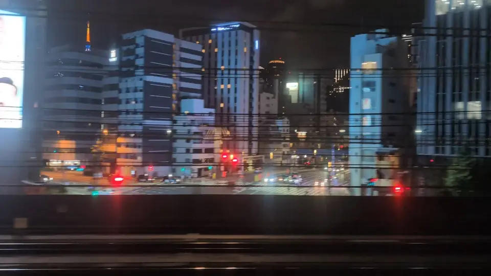
东京铁塔
每天都有当天的颜色
离开东京站约3分钟，建筑物的缝隙间便会出现一座红色高塔。
东京塔并非每晚都以同样的方式亮灯。基本的“Landmark Light”夏季呈白色、冬季呈温暖的琥珀色；纪念日或活动日则可能以“Diamond Veil”换上粉红、蓝色或彩虹色。 颜色取决于您的乘车日期 ——这是本页第一处只属于今夜的风景。
它出现时，您可能还在收放行李。上车前先记得：一坐下便看右边，否则很容易错过。
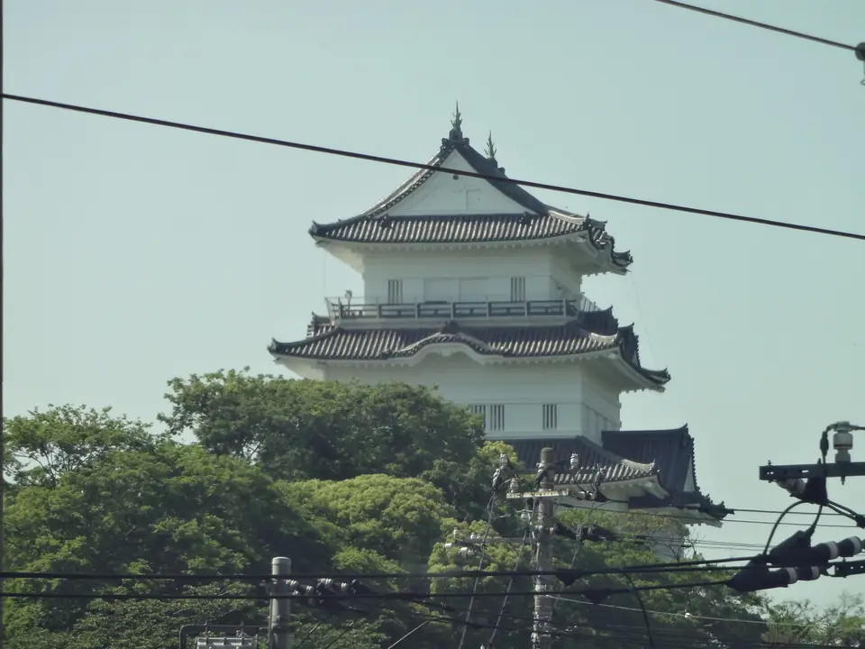
小田原城
每天都有当天的颜色
根据小田原城官方说明，天守阁 每晚从日落亮灯至21:00。此外，也会配合各类宣传活动进行彩色亮灯，每月安排公布于官方网站。
因此，和东京塔一样， 您乘车当晚的颜色早已有了安排 ——不过，这座城在A席侧。东京出发后约半小时，先是右侧、再是左侧，各有一座换上当日灯色的建筑从窗外经过。
季节限定亮灯
时间刚好，就能遇见：季节限定亮灯
这些天守阁与五重塔并非每晚都会亮灯，而是配合季节或活动亮起。日期每年可能调整，因此各处都附上了官方信息链接。
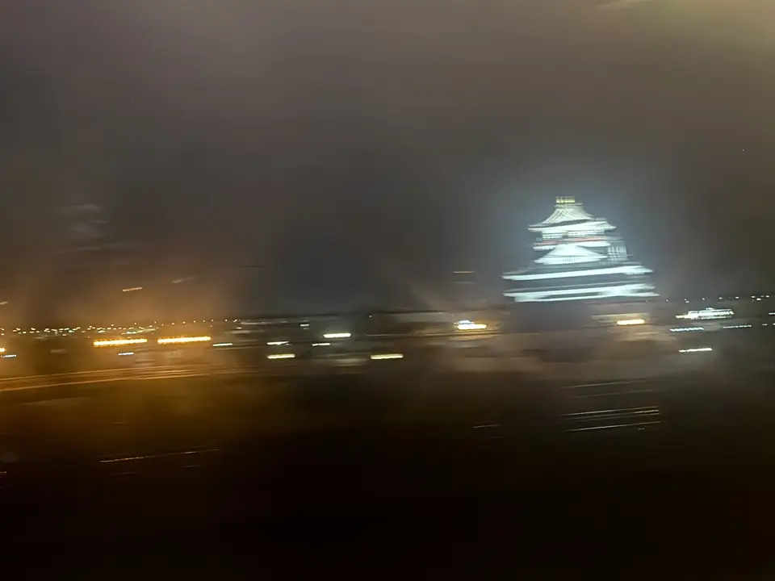
清洲城
特定季节才亮起的灯光
离开名古屋不久，五条川畔便有一座朱红色天守阁。它离铁路很近，即使白天也容易找到。
夜间亮灯 并非全年实施，而是在冬季“清洲Illumi”与春季樱花节等期间进行。每年日期可能不同，若特地想看，请先确认官方信息。
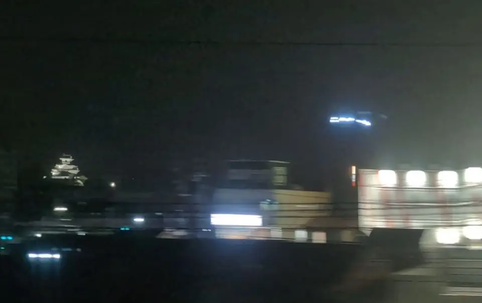
挂川城
亮起时，白色城楼浮在街景之上
挂川城非常靠近铁路，是沿线白天最容易看清的景点之一。至于夜间，目前能确认的是 限时亮灯，例如2月下旬至3月中旬的挂川樱花季，以及8月上旬“水之周”的蓝色亮灯。
此外，我们在2026年9月11日夜间乘坐下行列车时，也看见天守阁亮着灯（上方照片）。但尚未通过一手资料确认是否全年每晚亮灯；若想以此为目标，请先查看官方网站。
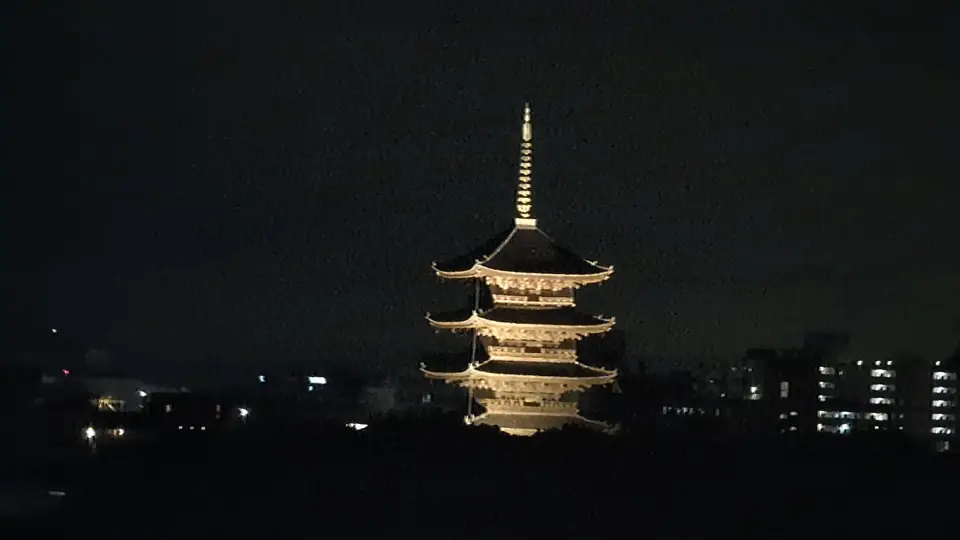
东寺五重塔
京都站旁，街景之上的金色高塔
一看到它的轮廓，就知道到了京都。入夜后，塔身披上金色光芒，浮在周围街景之上。往新大阪方向，请在京都站出发后留意左侧车窗（A席侧）；往东京方向，则在抵达京都站前留意右侧车窗（同为A席侧）。
金堂与讲堂的夜间特别参拜仅在春秋限定期间开放，不过 2026年9月6日从列车上望去，即使不在上述期间，五重塔仍亮着灯。参拜日期与时间请查看官方网站。
灯海
一片灯海：城市的夜景
在这些区间，城市本身就是车窗风景。白天看建筑，夜晚看一扇扇亮起的窗。
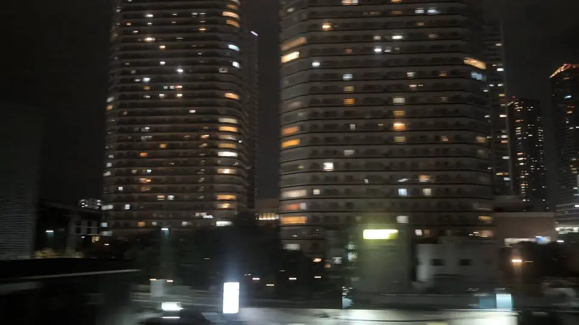
武藏小杉高楼群
层层叠起的窗灯
刚过河，一群高层住宅便靠近眼前。白天是灰色的建筑群，入夜后，每一扇亮起的窗户垂直堆叠成格。
把每一道光想成一户人家的生活，而不只是窗户，同样的建筑就有了截然不同的面貌。
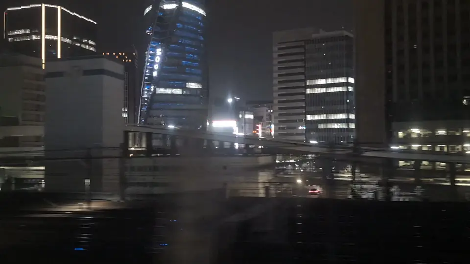
名古屋站前高楼群
逐渐靠近的一片光
接近名古屋时，车站周围的高楼像一整片光迎面而来。列车此时已开始减速，因此比起抵达东京或新大阪前的城市天际线，能多看上一会儿。
这也正是大家开始起身准备下车的时刻。不妨多坐一分钟，看看窗外。
入夜后更精彩
入夜后更精彩：不在热门清单上的夜景
这些不是典型的观光夜景。白天可能毫不留意地经过，天黑后却成了车窗里的主角。
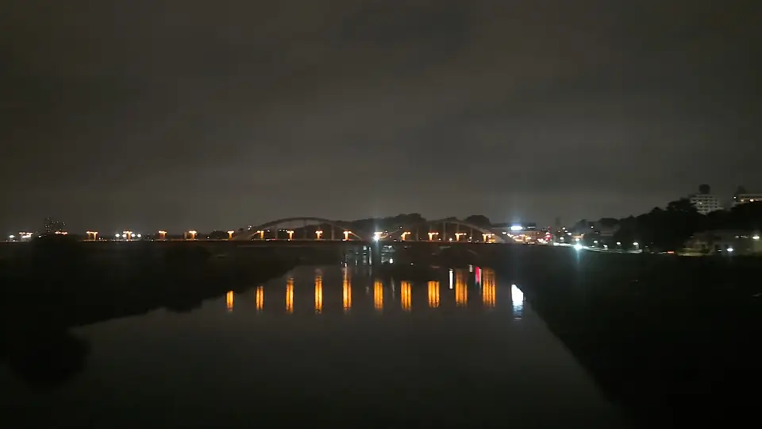
丸子桥
多摩川上的一列灯光
跨越多摩川的短短几秒，往下游望去，桥上的灯光连成一线。白天是河流与桥梁，夜里则只留下这道光。
水面上没有建筑遮挡，这里也是整条路线视野最开阔的地方之一。
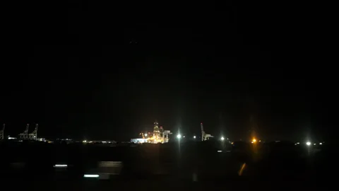
清水港与「地球」号
仍在作业的港口灯火
海侧远方，港口照明聚成一片。如果深海钻探船“地球号”（CHIKYU）正在停泊，有时还能辨认出钻探塔架形成的一道细长光柱。
这不是为了观光而打造的夜景，而是一处入夜后仍在工作的地方所发出的光。
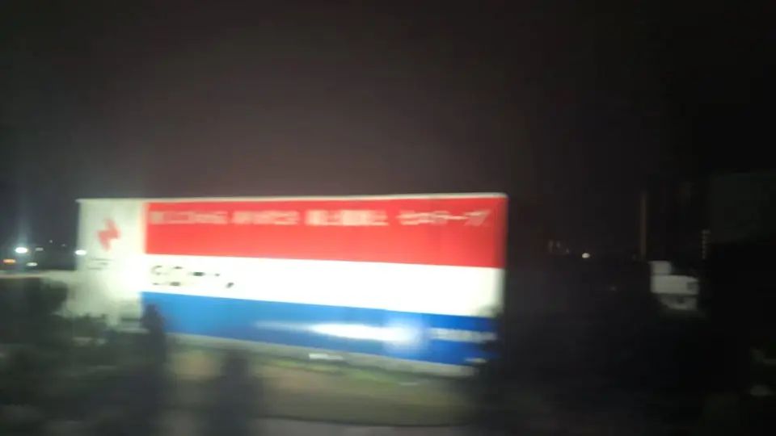
CELLOTAPE墙面广告牌
天黑后更容易找到
工厂外墙上绘着一面大广告牌。白天，它随着建筑物一同掠过；夜晚灯光照亮广告牌，只剩文字浮现在黑暗中。
这是沿线少数比白天更容易在夜间找到的车窗景物。
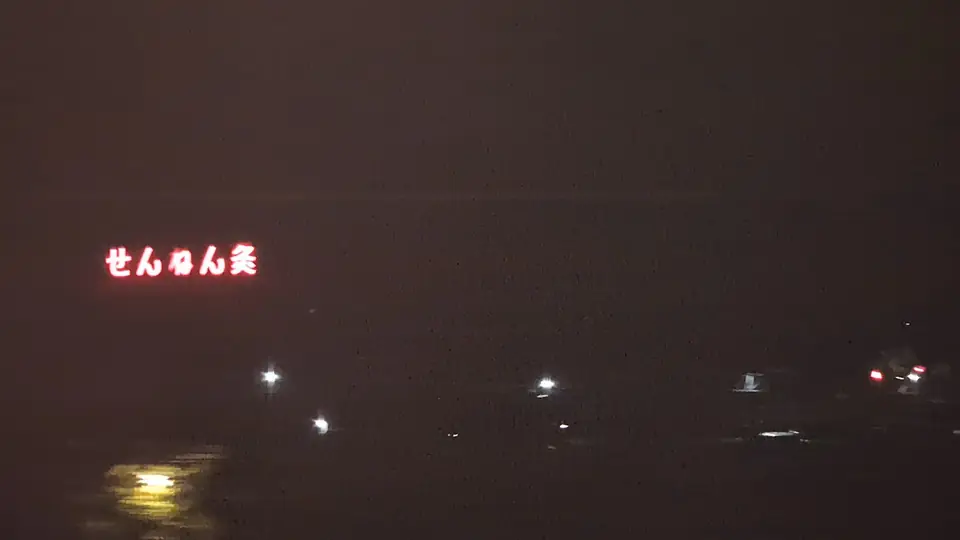
千年灸广告牌
暗色山边的红色文字
米原附近，A席侧山边排列着“せんねん灸”的文字。白天是一面白色广告牌，到了夜里，只留下发红光的字。
2026年9月6日与9月11日的夜晚，都看见它亮着。 广告牌本身便会发光，因此也是入夜后更容易找到的车窗景物。
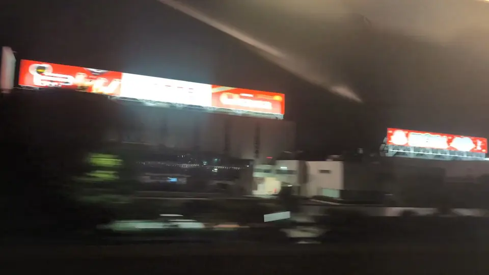
乐天滋贺工厂的点心广告牌
夜里依然明亮的点心名字
离开米原、往京都前进，A席侧会出现一排雪见大福等点心的广告牌。它们是工厂的招牌，夜里也亮着灯，经过时仍能读到商品名称。
以列车的速度，想逐一读完并不容易。 不如跟着一连串的色彩与形状看过去。
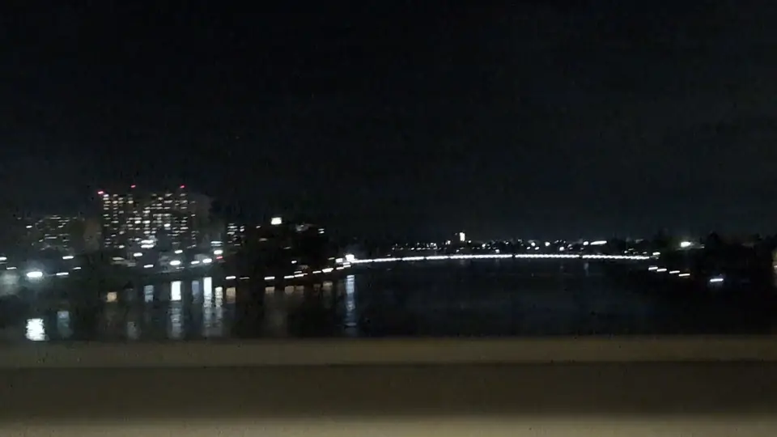
濑田唐桥
落在水面的光
跨越濑田川的一瞬间，桥上的灯光与水中的倒影一同映入眼帘。
这座桥有“掌握唐桥者，掌握天下”的古老说法。不过到了夜晚，比起历史，更令人记住的往往是那片静静的水面。
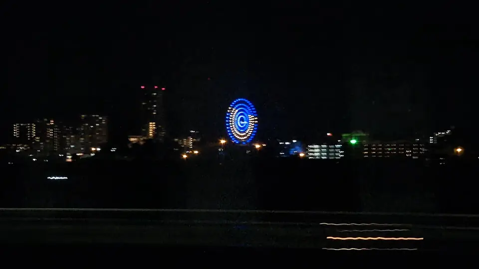
枚方公园摩天轮
白天是骨架，夜里是一道光环
离开京都、通过高槻后，A席侧屋顶上方会浮现一个圆环。那是最高处达80米、距离铁路约2.3公里的Sky Walker摩天轮。
白天只有淡色骨架，很容易错过； 亮灯后，圆环的形状清楚浮现，入夜后反而更容易找到。园内“光之游园地”灯饰活动在11月至4月举行，但2026年9月6日从列车上也看见摩天轮亮着灯。亮灯时间请以官方网站为准。
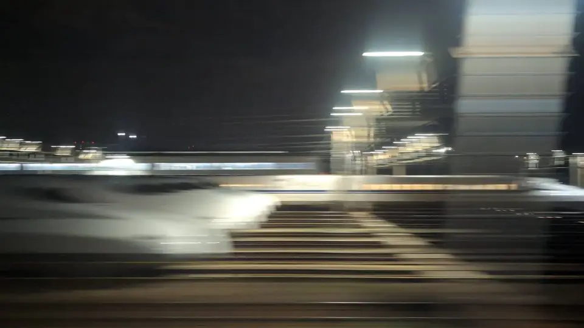
鸟饲车辆基地
一列列沉睡的新干线
抵达新大阪前，车辆基地里停放着一列列新干线。照明下，白色车身整齐排列，展现出与白天截然不同的气势。
和您乘坐的列车一样的车辆，正在灯光中歇息。 作为旅程尾声的风景，再适合不过。
如何欣赏车窗夜景
这是本页最实用的部分。
- 最大的阻碍是车内灯光，而不是距离夜里看不清窗外，原因通常不是外头太暗，而是车内照明映在玻璃上，让车窗变成一面镜子。将脸靠近车窗，用双手围出一小片阴影，让眼睛适应几秒，窗外的景色便会浮现。坐在自己的位置上就能悄悄做到。
- 与其寻找暗座位，不如遮住反光车厢灯光通常不会关闭。与其换位置寻找较暗的座位，在自己眼前的车窗遮出阴影，既快也更可靠。
- 想拍摄时，让镜头贴近玻璃手机离车窗越远，画面越容易映入车内灯光。让镜头直接贴近玻璃，便能减少大部分反光。不过，行进中列车拍摄夜景视频仍容易模糊，请先用眼睛欣赏。
- 两侧车窗，明暗可能不同离开建筑密集的城区后，其中一侧车窗漆黑一片并不罕见。E席侧与A席侧看到的景物不同，请先查看上方工具的座位侧一栏。
关于本页的介绍内容
亮灯日期、时间与颜色可能逐年调整。本页不列出固定活动日期，而是提供各处官方信息链接；出发前请再次确认。
小田原城使用白天照片，因为目前尚无从列车拍摄的夜景照片。挂川城则以新干线车窗拍下的夜景呈现。乘坐的列车能否看见亮灯，取决于时间、班次与天气。如果您拍到了车窗夜景，欢迎与我们分享。
清洲城照片经@asami_k920授权使用，小田原城照片来自Shinkansen window blog，其余为本站自行拍摄。通过时间与日落均为估算；实际所见会因列车、天气与座位而异。